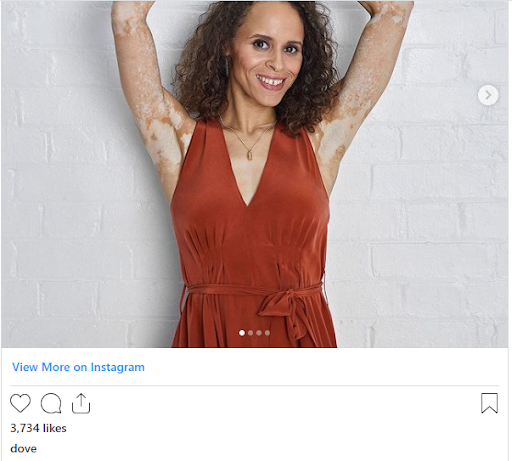
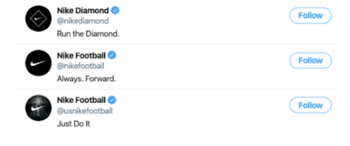
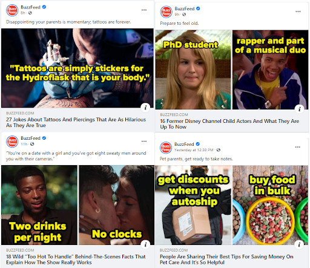

We live in the social media age. Just twenty years ago, we wouldn’t have imagined that we’d be spending a significant amount of time on platforms like Instagram, Facebook, and Twitter. However, today’s reality is that social media is possibly the top marketing option for many brands.
Your brand’s social media presence is not just another venue for marketing your brand. It offers a way for you to engage with your followers and customers. To get the most out of your social media accounts, your brand must ensure that the messaging is consistent across different platforms.
Building a social media style guide will allow your business to maintain a consistent brand voice and deliver uniform messaging regardless of the occasion. This article will show you why your business needs a social media style guide and how you can create one.
Why Do You Need a Social Media Style Guide?
What are social media style guides? In simple terms, they are content style guides that specify your posts’ wording, formatting, tone, and appearance on social media. A social media style guide creates uniformity across all your social media channels and shapes the overarching impression people form about your company.
The biggest benefit of a social media style guide is credibility. By making sure that all your posts are uniform in tone and appearance, you’re reinforcing the credibility of your brand name. A social media style guide will help you decide when and what to post and whether or not a collaborator or influencer will be aligned with your brand.
Both of these points allow brands to chart a course for social media growth and audience expansion. In addition, it will help you steer clear of content mistakes and unnecessary controversy.
5 Things to Include in Your Social Media Style Guide
Now that we’ve discussed the importance of creating a social media style guide let’s move on to its elements. Here are a few things that your social media style guide should contain.
1. Your Overall Brand Voice
Your brand voice is defined as the things you choose to tell your audience and how you deliver those messages. It is closely tied to your corporate values and is usually dictated by the image that you want to project to your audience.

Self-care brand Dove, for example, has spent decades trying to shatter conventional notions of beauty and dispel unjustified stereotypes worldwide. Therefore, most of its Instagram posts try to speak in an empowering, accommodating tone, and unlike other brands, feature people who don’t adequately fit into the usual beauty standards.
By finding its voice and sticking to it, Dove has built and maintained a reputation as an industry outlier – one that stands out from the crowd by embracing people from all walks of life.
2. Language and Formatting Style
You want to create distinctive content that your audience recognizes is created by your company. That need to create a distinctive brand voice is why every company that has achieved social media maturity has also honed in on a consistent language and formatting style.
How long should your “short” captions be? How about the text accompanying your Instagram posts? Should you attach links to your posts?
Different brands have their unique styles when it comes to the languages and images they use. Some companies, for example, will use memes. Others will avoid memes because it doesn’t align with their brand identity.
You need to define what type of visual content and language is suitable for your company.
3. Terms, Trademarks, and Other Brand Jargon
Trademarks and other registered IPs can help set a brand apart and give weight to your brand voice. Nike, for example, never hesitates to place its trademarked catchphrases and taglines front-and-center on all of its social media pages.

The “just do it” mantra, in particular, has struck a chord with Nike’s audience. The slogan permeates all of its brands and product lines. Whenever you hear “Just do it”, you immediately think of Nike and their athlete endorsers.
Aside from mottos and catchphrases, other unique brand properties are also helpful in establishing a unique voice. Other industry-specific terms also create an air of knowledge around your social media posts, product announcements, and community efforts.
When creating your social media style guide, consider what terms you want to include in your content regularly. Content creators will need to find creative ways to consistently weave these terms and IPs into your social media content. It will set a clear idea of what comes to peoples’ minds when they see your brand.
4. Consumer Personas
Many brands that try to appeal to everyone end up pleasing no one. If you’re running a small business, the safest strategy to follow is to target one or two specific markets and to tailor your messaging to them. Creating a customer persona will lend your audience a human face.
A customer persona is the personification of your market. It includes their average age, location, occupation, interests, and needs. These factors help you determine the sort of social media messaging you will post on your accounts and resonate with your audience.
By creating a customer persona, you can also dictate the customer experience, particularly when it comes to your brand. People gravitate towards brands that know their pain points and provide solutions for addressing those issues.
5. Hashtag Usage
Ever since Twitter popularised the hashtag in the early 2010s, it has become a tool for social awareness, change, and communication. You may use a hashtag to promote your brand and let your followers engage with you. At the same time, a hashtag can bring you into an existing conversation, especially one that involves your corporate values.
While hashtagging is a powerful method of engaging new audiences, you should be careful not to overuse them. Your social media style guide should include the kind and number of hashtags you can use with your posts so that your brand can participate in the conversations that matter.
How to Create Your Social Media Style Guide.
Knowing what to put in your social media style guide is one thing, but putting one together is another. When you build a style guide, you need to follow a specific process to ensure that you’ve got all the bases covered. Follow these five steps, and you’ll be on the right track to creating a social media style guide that will work for your business.
1. Identify Your Brand Voice
We spoke earlier about brand voice, what it means and why it is important to your brand communication strategy. The first thing you need to do when you build a style guide is to find your brand voice and specify it in your style guide.
To start, try describing your brand in three words. For this exercise, you need to get your social media team together with representatives from your public relations, customer success, and marketing. After all, your social media brand voice should be consistent with the rest of your branding.
Alternatively, you can treat your brand like a living, breathing individual. If it was a person, how would you describe its personality? Take a moment to define its personality traits and find that unique voice.
Whatever niche you are operating in, you must find that unique voice to set your brand apart.
2. Run a Thorough Social Media Audit
Auditing your social media means assessing the various underlying metrics that paint a picture of your social media strategy’s strengths and weaknesses. While running a thorough audit takes time and effort, it gives you valuable insight into the content types that work with your audience.
Begin by listing your existing social media profiles. Next, search out and collect metrics on engagement, publishing, audience demographics, and referral traffic. Also, try to explore any platform-specific data that might support further insights. For example, posting on Facebook at specific times will give your content more exposure.
After that, try to figure out where you are succeeding and encountering problems. Do you need to increase brand awareness? Boost engagement? Increase the number of followers? Generate more leads? Analyzing your metrics against these goals will give you an idea of what works and what doesn’t.
Finally, you have to ensure that your language, tone, and branding are consistent. Do your profiles across different channels post similar content? Note this information down, you’ll need it to create your social media style guide.
3. Set Down a Common Formatting Style
Seemingly inconspicuous things like the layout of your social media content can have real implications on its reach and reception from the public. Specifying a uniform appearance for your social media posts will allow you to create a strong visual identity.
You need to ask questions like these: Do the images come before the text? How long do the branded videos need to be? Should hashtags be placed alone at the top or bottom or worked directly into the content?
Answering these questions and similar ones will yield a clear set of formatting rules for your social media content.
4. Consider How You Will Respond to Competitors and Comments
Social media is a wide-open space that rewards brands that engage with their audiences. Knowing how to respond to your followers’ comments can establish your brand as one that cares for its customers enough to acknowledge feedback.
However, you also have to watch out for other brands’ social media accounts. Do you ignore them when they try to engage with your page, or do you engage with them when they “throw shade” at you, as Wendy’s does?
You can do what Wendy’s does, but it has to align with your existing brand voice. If you’ve defined your brand voice as laid-back and sophisticated, “roasting” your audience and competitors could turn away followers. Taking a more respectful approach, on the other hand, will reinforce your branding.
5. Set Visual Content Formatting Guidelines
While marketers used to see visual content as a complement for written copy, visuals like videos, memes, and infographics now rule social media. The rise of image- and video-centric platforms such as Instagram has only underscored what psychologists knew all along: people process and respond faster to the things they see, not what they read.
Aside from eliciting reactions more effectively, adding visual elements to your social media posts will make them 2.3 times more shareable. However, you need to post the right kind of visual content. Otherwise, you’ll leave your audience confused about your message.
For example, you need to be consistent with the color palettes that you use in your content. Using one color for certain elements across different posts will reinforce your brand:

BuzzFeed is one of the pioneers of the listicle genre, and when you see their social media posts that use yellow and black letters prominently, you know that clicking on those posts will bring you down a rabbit hole of fun trivia.
On the other hand, beauty brand Sephora uses pastel and jewel tones in its social media posts, which emphasize youth, femininity, and fun:
Aside from using the same color palettes in your posts, your visual content formatting guidelines should specify an aspect ratio for images. Sephora, for example, knows that most of its followers use mobile devices, so it tends to use images that follow a portrait orientation.
Creating visual content formatting guidelines isn’t just about the image you want to project to your followers. It also includes knowing your audience and serving content that they can see and appreciate without having to scroll up and down too much.
In Conclusion
Social media has gone from being a mere choice to being a necessity for brands nowadays. Its popularity has made it great for growing your brand community and communicating your product/service offerings to customers.
With the seemingly unending sea of branded content out there, however, it has become difficult for new entrants to find a unique voice. That’s where a social media style guide comes in.
Having a social media style guide allows you to set a clear approach to your tone, language, formatting, and communication style. In turn, your message is seen as cohesive by your faithful audience.
Take cues from the points mentioned above to create and implement your style guide. Remember, content is king on the internet. What you show on social media determines how people see your brand.
Bio
Nicholas Rubright is the communications specialist for Writer, an AI writing assistant designed for teams. Nicholas has previously worked to develop content marketing strategies for brands like Webex, Havenly, and Fictiv.
Leave a Reply